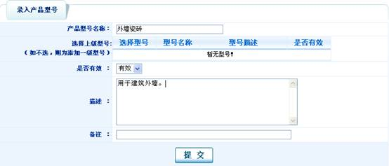
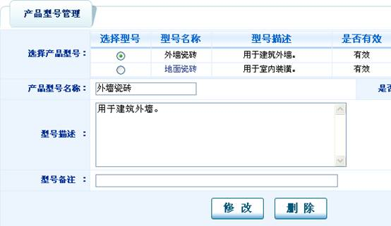
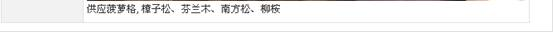

我要发布我的产品信息
| 在“企业商务室”下“供应信息”下可发布产品信息。 |
| 发布本公司主要产品的详细信息（目前有可能不供货，客户有需要可以和公司联系） 产品可设置型号，规格等参数（可选：也可以不设置）。设置如下 |
| 修改和删除： 打开“权限组划分”页面，可直接进行修改和删除 |
| 产品型号管理：对企业产品型号进行设置和管理。 产品型号添加：对企业的产品型号进行分类。 例：添加一级型号：“外墙瓷砖”，“地面瓷砖”。地面瓷砖添加二级型号：“大型瓷砖”，“小型瓷砖”。 添加一级型号： 打开“产品型号管理”页面，点击 |
|  |
| 添加“地面瓷砖”相同。 添加二级型号： 打开“产品型号管理”页面，点击 |
| “小瓷砖”同上。 点击 |
| 中“地面瓷砖”可查看新增加的二级分类： |
| 产品型号修改和删除： 打开“产品型号管理”页面，选择某个型号： |
|  |
| 可更新产品型号名称，型号描述，型号备注。修改后点提交即可。删除可直接点提交即可。 产品属性设置及管理：产品属性设置是针对某个型号产品设置其规格参数，同一型号可设置多个。 产品属性添加：打开“产品规格参数”页面，点击 例：设置“地面瓷砖”中“大瓷砖”的规格： 点击“地面瓷砖”进入二级型号页面： |
| 点击 产品属性管理： 打开“产品规格参数”页面，点击“地面瓷砖”进入二级型号页面，选择“大瓷砖”后，可修改 |
| 产品信息的设置和修改： 产品信息的添加： 打开“产品管理”页面，点击 录入常规参数：可选择对信息进行推荐，对标题进行加粗处理 |
| 录入产品说明 |
| 产品信息修改和删除： 打开“产品管理”页面，选择某产品对应的修改和删除按钮即可操作。 |
| 发布公司的供应信息：（公司目前有供货） 供应信息的添加： 打开“销售信息管理”页面，点击 |
| 等待运营商生成页面后，可在前台查看发布的信息。 供应信息详细页面： |
|  |
| 供应信息的修改和删除： 打开“销售信息管理”页面，点击供应信息对应的修改 |
 |